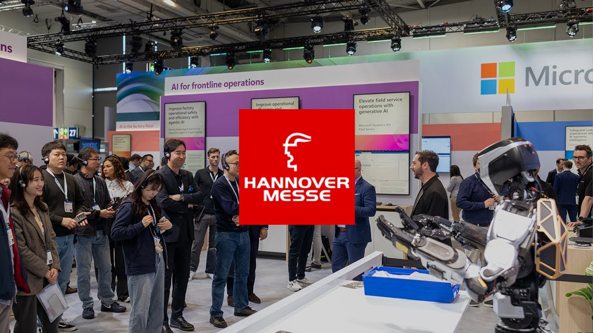

Phoenix Gen 8第八代轮式研发平台
Sanctuary AI · 轮式人形 · 原型
官方第八代发布资料明确轮式底座，面向高质量数据采集与训练；本轮未确认标准化商业整机采购。当前官网更强调跨硬件工业 Physical AI，历史整机资料不能推断现货、完整自主能力或客户收益。第六/七代尺寸与负载不继承。图片为官网明确 Gen 8 的汉诺威展会回顾视频封面，右侧展示 Phoenix 上身，含人物与展会标志；不是完整底座图片或自主能力证明。已核对明确关联Gen 8的2025展会资料：43.5h是累计展会运行，不是单电池时长；当前独立17 DoF液压手也没有Gen 8标配映射。

完整规格与依据
身体规格
- 身高
- 待核实
缺失原因：Gen 8发布稿只确认新轮式数据采集平台，未给尺寸；Gen 6/7双足机高度不是本代轮式机高度；这是本次核验边界，不表示厂家从未披露或该功能不存在
本项资料核验 2026-10-24；相关链接不表示厂商从未披露。 - 整机重量
- 待核实
缺失原因：Gen 8发布稿未给本代整机重量/含电池口径；前代宣传重量不得跨代继承；这是本次核验边界，不表示厂家从未披露或该功能不存在
本项资料核验 2026-10-24；相关链接不表示厂商从未披露。 - 自由度
- 待核实
缺失原因：发布稿未列轮式Gen 8全身DoF，不能把公司手部21 DoF或当前独立液压手17 DoF当本机总数；这是本次核验边界，不表示厂家从未披露或该功能不存在
本项资料核验 2026-10-24；相关链接不表示厂商从未披露。 - 末端执行器
- 待核实
缺失原因：公司当前独立液压手页有17 DoF与触觉，但没有确认是Gen 8本机标配；旧21 DoF手部演示也不能自动挂到第八代，末端BOM待核实；这是本次核验边界，不表示厂家从未披露或该功能不存在
本项资料核验 2026-10-24；相关链接不表示厂商从未披露。
运动与操作
- 操作负载
- 待核实
缺失原因：Gen 8发布稿强调强壮躯干和精确操作，但没有本代额定负载/单臂或双臂口径，不沿用Gen 6/7数字；这是本次核验边界，不表示厂家从未披露或该功能不存在
本项资料核验 2026-10-24；相关链接不表示厂商从未披露。 - 移动速度
- 待核实
缺失原因：轮式底座已确认，但本代发布稿未给底盘移动m/s；不把前代步行速度/手部动作速度当轮式移动速度；这是本次核验边界，不表示厂家从未披露或该功能不存在
本项资料核验 2026-10-24；相关链接不表示厂商从未披露。
电池与工作
- 工作时间
- 待核实
缺失原因：已找到2025展会累计43.5小时运行说明，明确关联Gen 8，但未说明是否持续/换电/有线供电；不是单电池续航，不能填43.5h；这是本次核验边界，不表示厂家从未披露或该功能不存在
本项资料核验 2026-10-24；相关链接不表示厂商从未披露。 - 电池能量
- 待核实
缺失原因：Gen 8发布稿没有电池Wh与供电配置，轮式展会运行不能证明电池容量；这是本次核验边界，不表示厂家从未披露或该功能不存在
本项资料核验 2026-10-24；相关链接不表示厂商从未披露。 - 电池容量
- 待核实
缺失原因：Gen 8发布稿没有Ah/mAh与标称电压，不能由展会时长反推容量；这是本次核验边界，不表示厂家从未披露或该功能不存在
本项资料核验 2026-10-24；相关链接不表示厂商从未披露。
感知与开发
- 感知配置
- 深度相机、视觉相机、音视频系统及遥测 已核对原文 · 厂商资料
第八代官方发布逐项说明视场/分辨率与遥测系统改进；未列确切数值、型号和数量，不能据此称完整BOM或自主性能实测
本项资料核验 2026-10-24 - 计算平台
- 待核实
缺失原因：Gen 8稿只描述AI控制与训练数据路径，未给机载芯片/算力；云合作不等于本机计算型号；这是本次核验边界，不表示厂家从未披露或该功能不存在
本项资料核验 2026-10-24；相关链接不表示厂商从未披露。 - 二次开发
- 待核实
缺失原因：当前工业Physical AI方案/客户洽谈入口未给Gen 8研究平台对客户开放的SDK或关节级权限，数据采集平台不自动意味着开源/二开包；这是本次核验边界，不表示厂家从未披露或该功能不存在
本项资料核验 2026-10-24；相关链接不表示厂商从未披露。
采购信息
- 美元报价
- 待核实
缺失原因：该稿为研发/数据采集平台发布，没有美元整机采购方案；工业方案合作费用/融资不等于Gen 8整机报价；这是本次核验边界，不表示厂家从未披露或该功能不存在
本项资料核验 2026-10-24；相关链接不表示厂商从未披露。 - 人民币报价
- 待核实
缺失原因：未取得轮式Gen 8人民币整机报价；不以其他代/第三方未溯源金额换算；这是本次核验边界，不表示厂家从未披露或该功能不存在
本项资料核验 2026-10-24；相关链接不表示厂商从未披露。